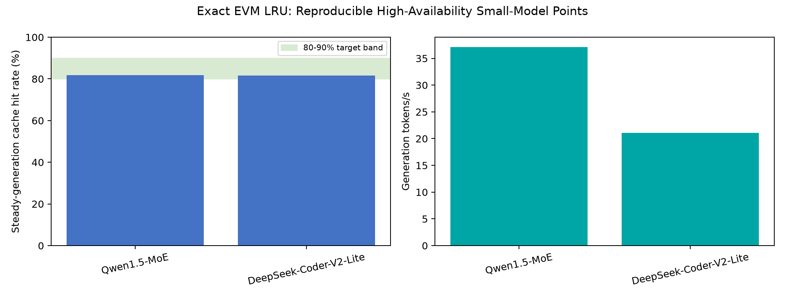
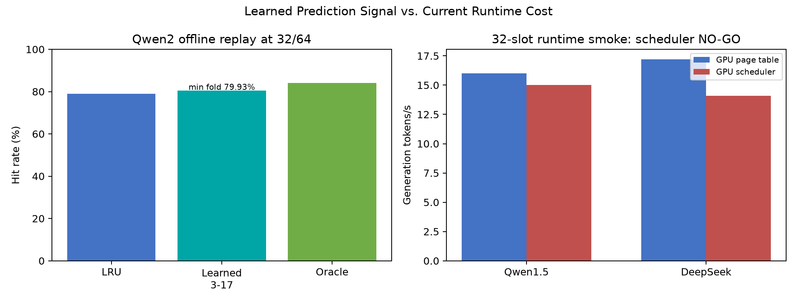
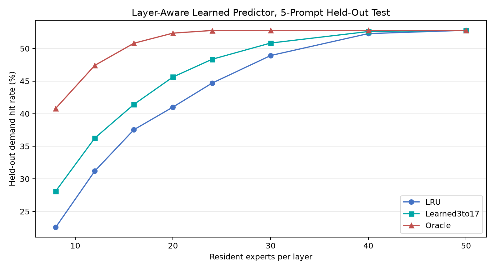
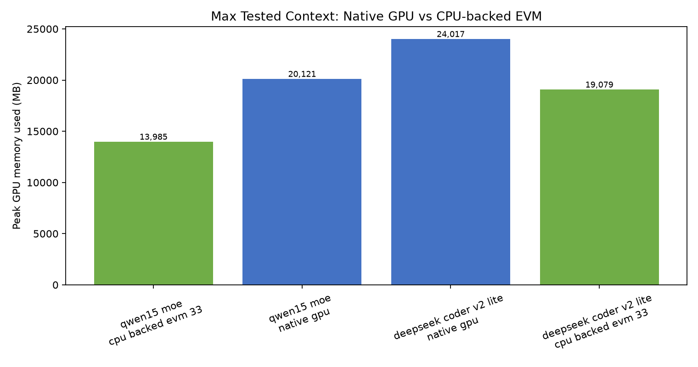

3 / 17
Token reuse window
Median expert reuse is 3 tokens; the 95th percentile is 17 tokens across the sanitized routing trace.
EVM explores whether Mixture-of-Experts inference can exchange fixed full-model expert residency for a bounded, short-horizon CUDA expert pool while preserving the router's original choices.
Median expert reuse is 3 tokens; the 95th percentile is 17 tokens across the sanitized routing trace.
CPU-backed EVM reduced sampled GPU memory across the three tested MoE models.
Disk-backed exact-eight EVM demonstrated targeted loading without full-model RAM or page-file residency.
Boundary: the disk-backed path is a memory proof, not a production-throughput claim. Static GPU packs are fast and compact but change the model and must independently pass quality gates.




Canonical paper, curated tables, and sanitized routing telemetry.
The exact 26-commit llama.cpp patch series and its recorded upstream base.
Offline MoE MRI, versioned diagnostic payloads, and quality-gated static-pack procedures.
{kind=link}
{kind=link}
{kind=link}
{kind=link}